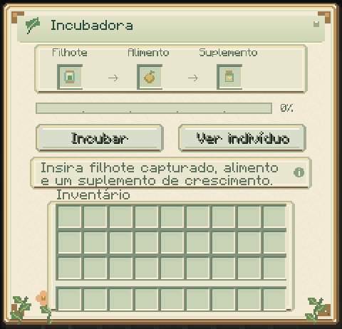

Incubadora
Promova o crescimento de um filhote capturado, preservando sua identidade, genes e linhagem. Cada ciclo é iniciado pelo cuidador.

A câmara fica voltada para você na colocação. O console anima enquanto o ciclo avança e fica parado ao pausar ou concluir. O berço é parte do equipamento; o indivíduo permanece guardado na cápsula.
Receita e operação
F V F
V G V
F R F
F = ferro; V = vidro; G = geleia reprodutiva; R = redstone.
ID: slimeevolution:incubator, também na aba Ferramentas e Utilidades.
Texturas originais da carcaça e superfície acompanham o bloco.
- Capture um filhote seguindo as regras normais de confiança, vida e energia.
- Abra a incubadora, insira a cápsula, um alimento da dieta e geleia reprodutiva, catalisador genético ou geleia real.
- Como cuidador, pressione Incubar. O indivíduo precisa ter fome abaixo de 80, conforto de pelo menos 40 e energia de pelo menos 20.
- Após 200 ticks carregados (dez segundos a 20 ticks/s), o ciclo conclui.
- Use Ver indivíduo, retire a cápsula ou inicie outro ciclo se ainda houver crescimento pendente e materiais suficientes.

Cada ciclo consome um alimento compatível e um suplemento, somente na conclusão. A geleia reduz o crescimento restante em até 1.200 ticks; o catalisador, em até 2.400 ticks; a Geleia Real, em até 3.600 ticks, equivalentes a um/dois/três minutos normais. Os três suplementos acrescentam 200 ticks de idade cronológica. Crescimento assistido e idade são contabilizados separadamente. O tamanho final continua sendo o tamanho adulto determinado anteriormente.
O alimento reduz a fome em até 20 e recupera até dez de energia, com limites 0/100. Conforto e confiança permanecem iguais. A recarga alimentar passa a 100 ticks após concluir. Genoma, linhagem, metamorfose e demais recargas são preservados; a proporção de vida acompanha a mudança de tamanho. A incubadora não concede metamorfoses, mutações, reprodução ou confiança.
Sem alimento correto ou suplemento válido, o trabalho pausa. Trocar/remover o espécime cancela sem cobrar. A conclusão não inicia outro ciclo automaticamente. Adultos são recusados. O indicador de conclusão permite ler o resultado mesmo quando o filhote amadureceu; o servidor revalida toda nova solicitação.
Retirar o indivíduo
Ao concluir, retire a cápsula atualizada. Ela conserva o indivíduo e pode ser liberada normalmente; cópias anteriores deixam de representar a captura válida.